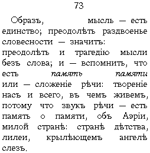
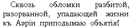

Page index / gl
Glossolalia (Section 73)
GLOSSOLALIA

73
Image, thought are -- a unity; to overcome the bifurcation of the written word -- signifies: to overcome too the tragedy of thought without the word; and -- to remember, that the memory of memory or -- the composition of speech is: the creation of us and of everything, in which we live, because the sound of speech is -- the memory of memory, of Aeria, the dear land: of the land of childhood, of the lily, of the winged angel of tears.

Through the pieces of broken, torn apart, fallen life I raise embraces to Aeria!